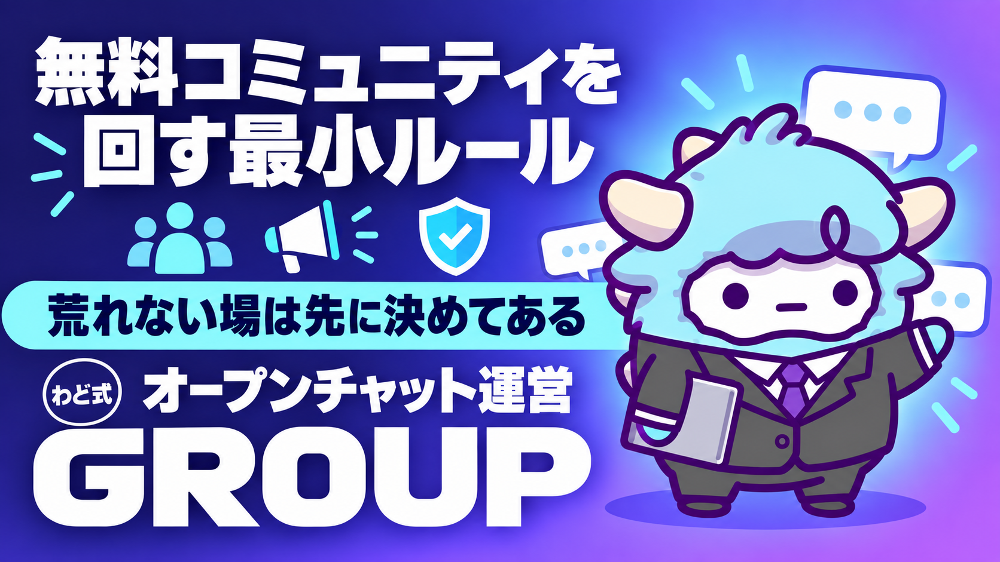

STEP3 オープンチャット運営ルール＋告知文テンプレ
無料コミュニティを回す最小ルールと、告知の3型
このページが特典の本体です。下へスクロールして使ってくださいSTEP3 オープンチャット運営ルール＋告知文テンプレ
無料のオープンチャットを、迷わず開いて、毎日続けられる運営ルールと、そのまま貼って使える告知文3型を手に入れます。今日中に、あなたのチャットの「1行の目的」が決まります。
はじめに
STEP1で最初の1件をつくり、STEP2で経験をコンテンツに変えたら、次にやることは「届く人数を増やす」ことです。ここでよく使われる場が、無料で参加できるオープンチャットです。
オープンチャットが強いのは、1対1のやり取りと違って「みんなが見ている場所」だからです。誰かの質問に答えると、それを読んでいる他の人にも価値が届きます。誰かがアウトプットを報告すると、それを見ている人が「自分もやってみよう」と動きます。1つの発言が、複数人に届く。これが、SNS発信やローンチ本番の前に、無料のコミュニティを育てておく理由です。
ただし、オープンチャットは開いただけでは動きません。管理者が投稿をやめた瞬間から過疎化が始まります。逆に、ルールが曖昧なまま人数だけ増えると、雑談ばかりの場になったり、一方的な告知だらけの場になったりして、誰も得しない空間になります。
この特典は、その両方を防ぐための「運営ルールシート」と、そのまま使える「告知文テンプレ3型」をセットにしたものです。書いてあるとおりに貼り付ければ、今日から運営を始められます。
この特典の進め方
- このページ自体が特典の本体です。上から順に読み進めてください
- 「運営ルールシート全文」は、あなたのオープンチャットのピン留め(固定表示)にそのまま貼り付けられる形にしてあります
- 「告知文テンプレ全文」は3つの型があります。今日投稿するものを1つだけ選んで使ってください。3つ全部を同時に使う必要はありません
- 読み終えたら「最初のゴール」を1つだけ終わらせてから、次に進んでください
最初のゴール（今日やる1つ）
今日はこれだけをやってください。
- [ ] あなたのオープンチャットの「1行の目的」を書く(例:「AIで収益を上げたい人が、迷ったときに聞ける場所」)
1行の目的が決まらないと、投稿する内容がぶれます。決まったら、次の章に進んでください。
この工程で決めること
オープンチャットを開く前に、次の4つを先に決めます。あとから変えてもかまいませんが、最初に「仮」でいいので決めておくと、投稿するたびに迷わなくなります。
| 決めること | 内容 | 例 |
|---|---|---|
| 目的 | このチャットで何を得てもらうか | AIで収益を上げるための、日々の気づきと質問の場 |
| 対象 | 誰に向けた場所か | AIマネタイズを始めたばかりの人 |
| トーン | どんな温度で話すか | 熱量高め・カジュアル・敬語は使うが堅苦しくしない |
| 頻度 | 管理者としてどれくらい投稿するか | 1日1〜3投稿を目安にする |
ここで大事なのは、「誰にでも合う場所」を目指さないことです。対象を絞るほど、参加者は「自分のためのチャットだ」と感じます。対象を広げすぎると、誰の心にも刺さらない投稿しかできなくなります。
もう1つ決めておきたいのが「このチャットの役割」です。オープンチャットは、それ単体で完結させる場所ではありません。日常的にやり取りする場所であり、より深い情報やセミナー案内は、別の場所(あなたの発信媒体やメール・登録制の配信など)に流す入口として使います。「ここで全部を完結させよう」とすると、投稿のたびに何をすべきか迷います。
手順（1つずつ）
オープンチャットを立ち上げてから、運営が回り出すまでの手順です。順番どおりに進めてください。
- チャットを作成する — 名前は「1行の目的」がそのまま伝わる名前にします。ニックネームだけで参加できる場を選ぶと、参加のハードルが下がります
- プロフィール文を書く — このチャットが「誰の・何のための場所か」を1〜2文で書きます。長い自己紹介は不要です
- 運営ルールをピン留めする — 次の章の「運営ルールシート全文」をそのまま貼り付けます。ピン留め機能(重要な情報を固定表示する機能)がある場合は必ず使います
- 最初の投稿を用意する — 「告知文テンプレ全文」から1つ選び、開設の挨拶として投稿します
- 招待の導線を1つ決める — どこから人を招くか(あなたの発信の最後に一言添える、プロフィール欄に書く、など)を1つ決めます。複数の導線を同時に増やそうとしません
- 毎日の投稿を始める — 1日1〜3投稿を目安に、価値提供・質問投げかけ・成果シェアのどれかを続けます。告知だけの投稿を連続させません
- 週に1回、振り返る — 反応が多かった投稿・少なかった投稿を見直し、次の週の投稿の中身を調整します
完了の基準: 手順1〜4までが終わり、あなた以外の1人が反応(参加・リアクション・返信のいずれか)をしている状態になっていること。
運営ルールシート全文
以下を、あなたのオープンチャットのピン留めにそのまま貼り付けてください。【】の部分だけ、自分の言葉に書き換えます。
【このチャットについて】
このチャットは「【1行の目的をここに】」ための場所です。
【対象者(例: AIで収益を上げたいと考えている方)】に向けて運営しています。
【参加のルール】
1. ニックネームでの参加で構いません。本名の公開は不要です
2. 他の参加者を否定する発言、誹謗中傷は禁止します
3. 参加者・第三者の個人情報(本名・連絡先・勤務先など)を許可なく書き込まないでください
4. 宣伝・勧誘目的のみの投稿は禁止します(自分の発信や商品を紹介する場合は、まず運営者に相談してください)
5. スクリーンショットの無断転載・シェアは禁止します
【投稿・会話のルール】
- 質問はいつでも歓迎します。「こんな初歩的なこと聞いていいのかな」と思う内容ほど、他の人の役にも立ちます
- アウトプット(やってみた報告・作ったもの)の共有を歓迎します。感想・質問へのリアクションもお願いします
- 荒れた空気になった場合、運営者が介入します。指示に従っていただけない場合は、退出をお願いすることがあります
【運営者からのお願い】
- 毎日、価値のある情報やお題を投稿するよう努めます
- 一方的な告知だけを続けることはしません
- 皆さんの発言・アウトプットは、許可を得たうえで、匿名化して他の発信の参考にさせていただく場合があります
告知文テンプレ全文（3型）
3つの型を用意しました。目的によって使い分けてください。1回の投稿は1メッセージ・短文を意識します。長文を1つの投稿に詰め込みません。
A. 特典配布型(価値提供+アウトプット促進)
【タイトル・見出し】
今日はこれ、みんなに共有します。
▼内容
・【特典やノウハウの内容を箇条書きで1〜3行】
やってみたら、ぜひ結果を教えてください!
うまくいった人も、つまずいた人も、どちらも大歓迎です。
B. 質問投げかけ型(会話を促す)
みんなに聞きたいんだけど、
【聞きたいテーマ】について、どうしてる?
・うまくいってる方法
・逆に困っていること
どっちでもいいので、コメントで教えてください!
C. 公式の配信・別の場への誘導型(ファネル接続)
【告知したい内容の一言】について、
もう少し詳しい内容を【誘導先(例: 公式の配信・メール等)】でお伝えします。
気になる方はプロフィール欄・固定投稿のリンクから登録してみてください。
(このチャットでは、日々の気づきや質問のやり取りを中心に続けます)
型Cを使うときの注意: 毎回の投稿に誘導リンクを貼らないでください。価値提供・会話促進の投稿を数回続けたあとに、自然な流れで挟むのが基本です。
判断に迷ったときの3問
運営していると、「これは投稿していいのか」「この場面でどう動くべきか」に迷う瞬間が出てきます。そのときは、次の3つの問いに答えてください。
- この投稿・発言は、読んでいる人の役に立つか、それとも自分の都合だけか — 役に立たない・自分の都合だけの場合は、投稿を見送るか、書き方を変えます
- この場は今、会話が生まれる状態か、それとも一方通行になっていないか — 一方通行が続いているなら、次の投稿は「質問投げかけ型」に切り替えます
- 今、深い情報や別の場への案内が必要な場面か、それとも今のやり取りを続けるべき場面か — 判断がつかない場合は、案内を急がず、今の会話を優先します
この3問に答えても判断がつかない場合は、いったん投稿を保留にしてください。無理に今日中に投稿する必要はありません。
最新AI（2026年9月時点）での変わり目
2026年9月、OpenAIから新しいモデルが発表されました(取得日: 2026-09-06)。今回の変わり目で押さえておきたいのは、AIが「画面を読み取り、承認されたアプリを人間と同じように操作できる」段階に進んだことです。文章を書くだけでなく、実際の操作を代わりに進められる方向に変わってきています。
これがオープンチャット運営にどう関係するかというと、投稿文の下書きや、告知文テンプレの言い回しをその場で整えてもらう作業を、AIにより任せやすくなるということです。運営ルールシートや告知文をベースに「この場面用に言い換えて」と頼む使い方は、今後さらにやりやすくなっていきます。
一方で、注意点も明確に示されています。AIに画面の情報を読み取らせる使い方が広がるほど、「画面に表示されている内容が、不完全だったり、AIの行動に影響を与えるよう仕組まれていたりする可能性がある」という指摘が出ています。つまり、AIに何かを見せて操作させるときは、見せるものを選ぶ必要があるということです。オープンチャットの会話ログや参加者の書き込みをAIに読み込ませる際も、個人情報や機密情報を含んでいないかを、貼り付ける前に自分の目で確認してください。
また、新しいモデルは段階的に提供が広がる形を取っており、発表された直後でも、自分のアカウントにまだ表示されていないことがあります。「使えるはずなのに出てこない」場合は、数日待ってから確認し直してください。
AIをパソコン作業の相棒として使い始めたい場合は「Claude Code 最初の30分」を、繰り返す運営作業を「担当」として任せたい場合は「AI社員1人目のつくり方」を参考にしてください。
最初に投げるプロンプト
運営ルールシートと告知文テンプレを、自分のチャット向けに整えるときに使ってください。
あなたはコミュニティ運営のアシスタントです。
私はこれから、無料のオープンチャットを運営します。
私について:
- チャットの1行の目的:【自由に書く】
- 対象者:【例: AIで収益を上げたいと考えている人】
- トーン:【例: 熱量高め・カジュアル】
やってほしいこと:
1. 上の情報をもとに、運営ルールシートの【】部分を私の言葉で埋めてください
2. 告知文テンプレA・B・Cのうち、開設初日に投稿するのに向いているものを1つ選び、
理由を説明してください
3. 選んだテンプレの【】部分も、私の情報に沿って埋めてください
## 制約
- 断定的な収入・成果の予測はしないでください
- 私が書いていない実績を勝手に作らないでください
- 誇張表現(「誰でも」「必ず」など)は使わないでください
よくある失敗 7つと直し方
-
告知だけを連投する 直し方: 告知の前後に、価値提供の投稿か質問投げかけの投稿を挟みます。告知だけが続くチャットは読まれなくなります。
-
1対1のトーンで話しかける 直し方: 「あなたに」ではなく「みんなに」向けて話す言葉遣いに直します。個別の相談は、別の窓口に案内します。
-
参加者の発言・実績を無断で使う 直し方: 発言やアウトプットを紹介・引用する前に、必ず本人に確認します。確認が取れないものは使いません。
-
誘導リンクを毎回貼る 直し方: 誘導は数回に1回にとどめ、価値提供と会話促進を先に置きます。
-
投稿をやめて放置する 直し方: 毎日1投稿を最低ラインにして続けます。続けられない見込みなら、最初から頻度を下げて宣言しておきます。
-
荒れた空気を放置する 直し方: 運営ルールシートの参加ルールに沿って早めに介入します。放置すると、他の参加者が離れていきます。
-
対象が違う話題を投げる 直し方: 「この工程で決めること」で決めた対象・トーンに立ち返り、今の投稿がそこからずれていないか確認します。
安全に使うための注意
- この特典は、コミュニティ運営を助けるための工程表です。成果や収入を保証するものではありません
- 参加者の本名・連絡先・勤務先などの個人情報は、本人の許可なく書き込まない・共有しないでください
- 参加者の発言・実績を他の発信で紹介する場合は、必ず事前に本人の許可を取ってください
- 会話ログや参加者の書き込みをAIツールに貼り付ける前に、個人情報・機密情報が含まれていないか確認してください
- 誇張表現(断定的な収入表現、根拠のない「誰でも」「必ず」等)は、告知文・投稿のどちらでも避けてください
- 運営中にトラブルや誹謗中傷が起きた場合は、放置せず、運営ルールシートに沿って早めに対応してください
つまずいたときに聞くプロンプト
投稿が続かない、反応が薄い、というときに使ってください。
私は無料のオープンチャットを運営していますが、次の状態で止まっています。
状況:
- 今の状態:【例: 投稿しても反応が少ない/何を投稿すればいいか分からない】
- ここまで試したこと:【自由に書く】
- 対象者:【例: AIで収益を上げたいと考えている人】
やってほしいこと:
1. 止まっている理由を踏まえて、次に投稿する1件の内容を提案してください
2. 「特典配布型」「質問投げかけ型」「誘導型」のどれが今の状況に合っているか、理由つきで教えてください
3. 今日の投稿を1つの案として、実際の文章にしてください
用語集
| 用語 | 意味 |
|---|---|
| オープンチャット | 匿名(ニックネーム)で参加できる、公開・半公開のグループチャットの場 |
| ピン留め | 重要な情報を固定表示し、いつでも参照できるようにする機能 |
| ファネル | 見込み客が興味を持ってから行動に至るまでの流れ全体 |
| 熱量 | 発言・反応の盛り上がりの度合い |
| 社会的証明 | 「他の人もやっている・良いと言っている」ことが安心材料になる心理効果 |
| 一方通行 | 運営者だけが発信し、参加者からの反応・会話が生まれていない状態 |
| ROM専 | 発言せず読むだけで参加している人 |
| 誘導 | 会話の場から、別の場所(発信媒体や配信など)へ案内すること |
| CTA | 読者に取ってほしい次の行動を示す呼びかけ(参加する・登録するなど) |
| 荒れる | 参加者同士のやり取りが攻撃的・否定的な空気になること |
出す前の品質チェック（10項目）
投稿する前、または運営ルールを確定する前に確認してください。
- その投稿は、読んでいる人の役に立つ内容になっているか
- 告知だけの投稿が連続していないか
- 誘導リンクを貼りすぎていないか
- 参加者の個人情報・実績を、許可なく書いていないか
- 誇張表現(断定的な収入表現、根拠のない「誰でも」等)が入っていないか
- 対象者・トーンが「この工程で決めること」で決めた内容とずれていないか
- 会話を促す一言(質問・呼びかけ)が入っているか
- 荒れた空気になったときの対応手順を、自分で把握できているか
- AIツールに貼り付ける会話ログ・書き込みに、機密情報が含まれていないか
- 今日の投稿は、1つのメッセージで完結する長さになっているか
10項目のうち答えに詰まるものがあれば、投稿を見送るか、書き直してから進めてください。
最終チェックリスト
- [ ] 運営ルールシートを、ピン留めに貼り付けた
- [ ] 告知文テンプレのうち1つを、開設の投稿として使った
- [ ] 毎日の投稿頻度(目安1〜3投稿)を、自分の中で決めた
- [ ] 判断に迷ったときの3問を、いつでも見返せる場所に控えた
4つすべてに「はい」と言えたら、あなたのオープンチャットは動き出す準備ができています。あとは、毎日の投稿を淡々と続けてください。
次の一手
この特典は、「稼ぎ方より、稼ぐ順番」のSTEP3(SNSとローンチで規模を上げる)にあたります。無料のコミュニティは、STEP3で発信を届ける入口の1つです。
面談では、あなた専用の1枚(特注のロードマップ)を一緒に作ります。